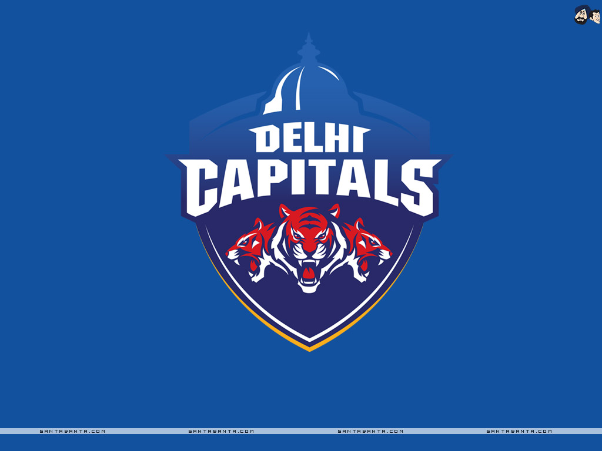

DELHI CAPITALS
Captain Shreyas Iyer
Titles Won : 0

| Player Name |
Role |
Batting Style |
Photo |
| SHIKAR DHAWAN |
Batsmen |
Left HANDED BAT |
 |
| Pruthvi Raj |
Batsmen |
Right Handed Bat |
 |
| Shreyas Iyer |
Batsmen |
Right Handed Bat |
 |
| Rishab Pant |
Wicket Keeper |
Left Handed Bat |
 |
| Marcus Stoinis |
All Rounder |
Right Handed Bat |
 |
| Shimran Hetmyer |
Batsmen |
Left Handed Bat |
 |
| Axar Patel |
All Rounder |
Left Handed Bat and left arm fast /th>
|  |
| Ravichandran aswin |
All Rounder |
Right Handed Bat and right arm Off breaker |
 |
| Kagiso Rabada |
Bowler |
Right arm medium |
 |
| Harshal Patel |
Bowler |
Right arm legbreak |
 |
| Anrich Nortje |
Bowler |
right arm fast medium |
 |